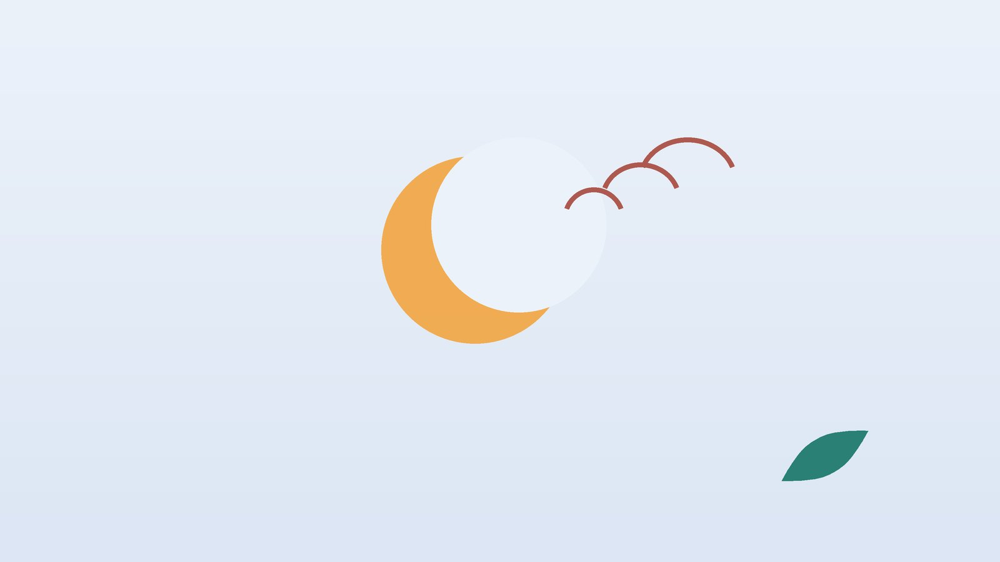

건강 칼럼 · 인천 소아 코골이 한의원
아이가 입을 벌리고 코를 곤다면, 소아 코골이·아데노이드 한방 관리

우리 아이 코골이, 이런 모습이 있나요?
- 감기가 아닐 때도 일주일에 사흘 넘게 코를 곤다
- 입을 벌린 채 자고 아침에 입술과 목이 말라 있다
- 자다가 숨이 멎은 듯 조용하다가 컥 하고 몰아쉰다
- 목을 뒤로 젖히거나 엎드려 자고 밤새 이리저리 뒹군다
- 아침에 잘 못 일어나고 낮에 산만하거나 짜증이 늘었다
- 또래보다 키나 몸무게가 덜 자라고 밥 먹는 속도가 느리다
이 체크리스트는 진단 도구가 아닙니다. 셋째 항목이 있거나 여러 항목이 겹치면 이비인후과에서 수면무호흡 여부를 먼저 확인하세요.
아이들은 왜 코를 골까요?
아데노이드는 코 뒤 깊은 곳에 있는 림프 조직으로, 편도와 함께 어린 시절 세균과 바이러스를 걸러 냅니다. 대체로 유아기부터 초등 저학년 무렵 상대적으로 가장 크고, 사춘기에 가까워지며 줄어드는 경향이 있습니다. 숨길은 아직 작은데 이 조직이 크면 잠잘 때 숨길이 좁아집니다.
- 아데노이드·편도 비대: 가장 흔한 원인입니다. 감기를 자주 앓으면 더 붓습니다.
- 알레르기비염: 코 점막이 부어 입으로 숨 쉬게 되고, 코골이를 키웁니다.
- 비만: 목 주위 지방이 숨길을 누릅니다.
미국소아과학회(AAP)는 2012년 지침에서 습관적으로 코를 고는 아이는 수면무호흡 여부를 살펴보고, 필요하면 수면다원검사로 확인하도록 권했습니다.
이비인후과 진료와 수면검사가 먼저인 신호
- 자다가 숨을 멈추는 모습이 자주 보이고 입술 주위가 파래진다
- 잠잘 때 가슴이 쑥쑥 들어갈 만큼 힘겹게 숨 쉰다
- 낮에 자꾸 졸거나, 반대로 가만히 있지 못하고 집중을 못 한다
- 가렸던 오줌을 다시 싸거나 아침마다 머리가 아프다고 한다
- 키와 몸무게가 성장 곡선에서 뒤처진다
- 열이 나며 목이 심하게 붓고 침을 삼키지 못하거나 입을 잘 벌리지 못한다
마지막 항목은 편도 주위에 고름이 차는 등 급한 상황일 수 있어 바로 응급실로 가세요. 나머지 신호가 있다면 이비인후과에서 내시경·X선과 수면다원검사를 받아 보세요. 수면무호흡이 뚜렷하면 아데노이드·편도 수술이 우선 권유될 수 있으며, 이 판단은 이비인후과 의견을 따릅니다.
한의학은 아이 코골이를 어떻게 보나요?
코를 고는 소리를 한의학에서는 한(鼾)이라 하고, 아데노이드와 편도처럼 목과 코 뒤에 덩어리가 뭉친 것은 열과 담(痰)이 엉긴 것으로 보았습니다. 아이는 열이 쉽게 위로 오르고 폐가 여려, 감기를 앓을 때마다 코와 목이 거듭 붓는다고 설명합니다.
또 소화 기운이 약한 아이는 먹은 것이 담으로 바뀌기 쉬워 콧물과 가래가 오래간다고 보았습니다. 그래서 부기를 가라앉히면서 폐와 비위를 튼튼히 하는 데 무게를 둡니다.
우리 아이 코골이는 어떤 유형일까?
이비인후과 검사로 급한 상황이 아님을 확인한 뒤 쓰는 한의학적 구분입니다.
1. 폐열(肺熱) 감기 뒤 붓는 유형
- 이런 아이에게 많아요
- 감기·편도염을 달고 사는 아이
- 나타나는 모습
- 감기 때마다 코골이가 심해지고 누런 콧물이 난다
- 함께 오는 몸의 신호
- 목이 자주 붓고 열이 잘 오름, 입 냄새
- 진찰에서 보이는 모습
- 편도가 붉게 커져 있고 혀끝이 붉음
- 치료 방향
- 목과 코의 열을 식혀 부기를 가라앉히는 방향 (형개연교탕 계열)
- 오늘부터 해 볼 것
- 방이 덥고 건조하지 않게 해 주세요.
2. 담습(痰濕) 막히고 무거운 유형
- 이런 아이에게 많아요
- 살이 오르고 단 간식과 우유를 많이 먹는 아이
- 나타나는 모습
- 코가 늘 막혀 있고 코 고는 소리가 둔하고 크다
- 함께 오는 몸의 신호
- 가래 낀 기침, 몸이 무거움, 아침에 붓는 얼굴
- 진찰에서 보이는 모습
- 혀가 두툼하고 하얀 태가 끼어 있음
- 치료 방향
- 뭉친 담을 삭여 숨길을 넓히는 방향 (이진탕 계열)
- 오늘부터 해 볼 것
- 저녁 간식과 잠들기 전 우유를 줄여 보세요.
3. 폐비기허(肺脾氣虛) 약해서 반복되는 유형
- 이런 아이에게 많아요
- 입이 짧고 쉽게 지치는 아이
- 나타나는 모습
- 입을 벌리고 자며 맑은 콧물이 잦다
- 함께 오는 몸의 신호
- 식욕 부진, 땀이 많음, 감기가 오래감
- 진찰에서 보이는 모습
- 얼굴빛이 희고 맥이 약함
- 치료 방향
- 폐와 비위를 북돋아 감기를 덜 앓게 하는 방향 (옥병풍산 계열)
- 오늘부터 해 볼 것
- 낮에 바깥에서 충분히 뛰놀게 해 주세요.
한의원에서는 어떻게 진찰하나요?
- 검사 결과: 이비인후과나 수면검사 결과를 먼저 보고, 아직이라면 필요성을 안내합니다.
- 잠 모습 영상: 잠자는 모습을 1~2분 찍어 오시면 도움이 됩니다.
- 코와 목: 콧속 점막 부기, 콧물 색, 편도 크기, 입벌림 습관을 살핍니다.
- 성장과 생활: 키·몸무게 변화, 식습관, 낮 행동을 여쭙습니다.
침·한약 치료는 어떻게 하나요?
1. 침 치료
어린이에게는 피부에 붙이는 소아 스티커침을 씁니다.
- 영향(迎香): 콧방울 바깥 가장자리 옆 주름 자리입니다.
- 상성(上星): 이마 가운데 머리카락이 시작되는 선에서 아이 손가락 한 마디 위입니다.
- 열결(列缺): 엄지 쪽 손목 주름 위로 아이 손가락 두 마디쯤, 뼈가 도드라진 곳 위입니다.
- 풍륭(豐隆): 바깥 복사뼈와 무릎 바깥 사이의 한가운데 높이, 정강이뼈에서 조금 바깥입니다. 담을 삭일 때 씁니다.
2. 약침
약침은 아이들에게 시행하지 않습니다.
3. 한약
유형에 맞춰 탕약 위주로 처방하고, 쓴맛이 덜한 약재 위주로 구성해 나이와 체중에 맞춰 양을 정합니다. 아이가 잘 못 먹으면 단것을 조금 타서 먹여도 됩니다. 돌이 지나지 않은 아기에게는 꿀을 타지 마세요. 이비인후과에서 받은 코 스프레이나 알레르기 약은 처방대로 함께 쓰시고 이름을 알려 주시면 확인해 처방합니다.
한약이 아데노이드 크기 자체를 줄인다는 근거는 아직 연구 규모가 작아 조심스럽게 말씀드립니다. 비염으로 인한 코막힘과 잦은 감기를 줄여 코골이가 덜해지는 것을 목표로 합니다.
관리는 어떤 순서로 진행되나요?
- 이비인후과 확인 아데노이드·편도 크기와 수면무호흡 정도를 확인합니다.
- 첫 한방 진료 코·목 상태와 잠 영상, 성장 기록을 보고 유형을 나눕니다.
- 코막힘 줄이기 스티커침과 한약, 코 세척 같은 생활 관리를 함께 합니다.
- 다시 점검 코골이 횟수를 비교하고, 신호가 나빠지면 이비인후과에 다시 갑니다.
기간과 횟수는 증상이 얼마나 오래되었는지, 동반 증상이 무엇인지에 따라 달라지며, 진찰 후 개인별로 안내합니다.
집에서 해 볼 수 있는 다섯 가지
- 코골이 일지: 일주일에 며칠, 몇 시쯤 고는지와 감기 여부를 적어 두세요.
- 코 세척: 아이용 생리식염수로 자기 전 콧물과 먼지를 씻어 줍니다.
- 옆으로 재우기: 등을 대고 누우면 숨길이 더 좁아지므로 옆으로 누워 자도록 쿠션을 받쳐 주세요.
- 침실 공기: 담배 연기가 없게 하고 침구를 자주 빨아 먼지와 집먼지진드기를 줄입니다.
- 영향 누르기: 잠들기 전 콧방울 옆 영향혈을 양쪽 검지로 작은 원을 그리듯 열 번 문질러 주세요.
다른 진료가 함께 필요한 경우
- 숨 멈춤, 낮 졸림, 성장 부진이 있으면 이비인후과에서 수면다원검사를 받으세요.
- 귀가 먹먹하다거나 TV 소리를 키운다면 삼출성 중이염이 있는지 확인하세요.
- 산만함과 충동성이 뚜렷하면 코골이 치료와 함께 소아정신과에서 ADHD 여부도 살펴보세요. 증상이 가벼운 경우 한약 치료를 중심으로 관리하기도 하지만, 깊다면 함께 치료받으세요.
자주 묻는 질문 Q&A
- Q1. 아이가 코를 고는 건 피곤해서 그런 거 아닌가요?
- 가끔 고는 것은 괜찮지만, 감기도 아닌데 매일 고는 것은 숨길이 좁다는 신호일 수 있습니다.
- Q2. 아데노이드는 크면 저절로 작아지나요?
- 사춘기 무렵 줄어드는 경향이 있지만, 그동안 잠과 성장에 영향을 줄 수 있어 정도를 확인해야 합니다.
- Q3. 수술을 권유받았는데 한의원 치료로 대신할 수 있나요?
- 수면무호흡이 뚜렷하다면 이비인후과 판단에 따라 수술을 먼저 고려하세요. 한방 치료는 그 외의 경우나 수술 뒤 관리에 씁니다.
- Q4. 입 테이프를 붙여 재워도 되나요?
- 코가 막힌 아이에게는 숨이 막힐 위험이 있어 권하지 않습니다.
- Q5. 스티커침은 아프지 않나요?
- 피부에 붙이기만 하는 방식이라 바늘로 찌르지 않습니다.
- Q6. 한약은 얼마나 먹나요?
- 유형과 감기 빈도에 따라 다르며, 진찰 후 경과를 보며 정합니다.
- Q7. 한약을 잘 안 먹으면 어떻게 하나요?
- 단것을 조금 섞어 주셔도 됩니다. 돌이 지나지 않은 아기에게는 꿀을 타지 마세요.
- Q8. 코골이 때문에 키가 안 클 수도 있나요?
- 깊은 잠이 자주 깨지면 성장에 영향을 줄 수 있다는 보고가 있어, 성장이 더디면 꼭 검사를 받아 보세요.
문원열 대표원장한의사 · 365스마일한의원
임상 경력 15년, 인천 서구 가정동에서 개원 후 10년째 진료하고 있으며, FCST 턱관절학회·연부조직학회·침도학회 등에서 활동합니다. 아픈 곳만이 아니라 증상의 원인을 찾아 진료합니다.
진료 안내
- 진료시간
- 평일 09:00~20:00 (점심시간 13:00~14:00, 접수 마감 19:30)
토·일·공휴일 09:00~15:00 (접수 마감 14:30) - 주소
- 인천광역시 서구 가경주로 46, 2층 (가정동)
인천2호선 가정중앙시장역 인근
영상으로 길 안내 보기 → - 주차
- 한의원 건물 바로 앞 1층 도원주차장
- 예약
- 예약 바로가기 또는 전화 예약
진료시간은 사정에 따라 바뀔 수 있으니 방문 전 전화로 확인해 주세요.
함께 읽으면 좋은 칼럼
건강 칼럼 전체 보기 →


참고 자료
- Marcus CL, et al. Diagnosis and Management of Childhood Obstructive Sleep Apnea Syndrome. Pediatrics, 2012 (미국소아과학회 임상 지침)
- 질병관리청 국가건강정보포털 — 원문
※ 이 글은 일반적인 건강 정보이며, 개인의 상태에 따라 치료 방법과 결과는 다를 수 있습니다. 정확한 진단과 치료는 진료를 통해 결정됩니다. 침·약침 시술 후 드물게 멍, 통증 등이 생길 수 있습니다.